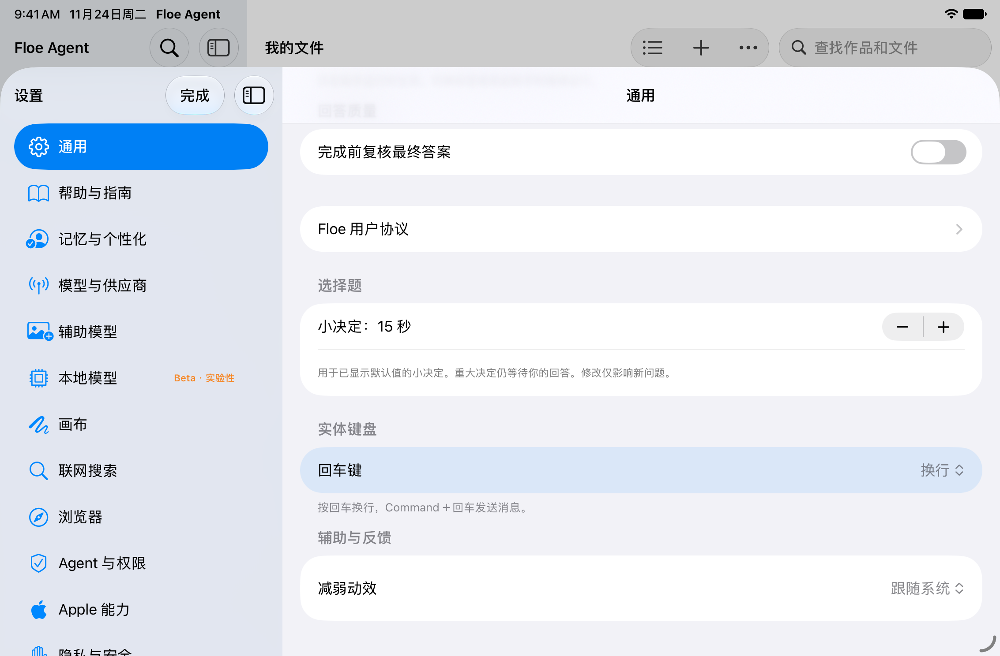
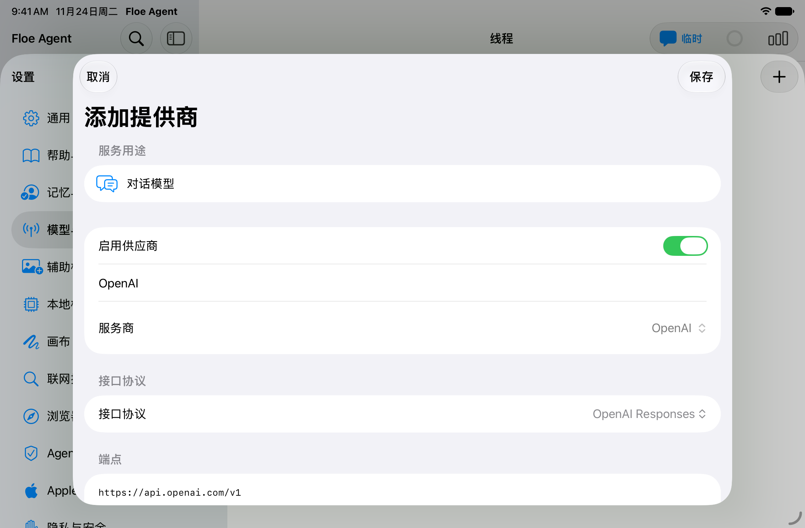
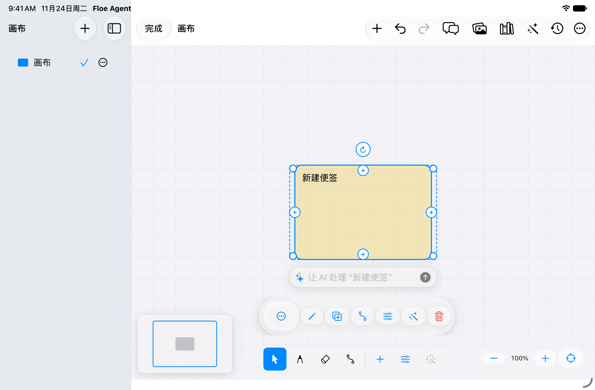
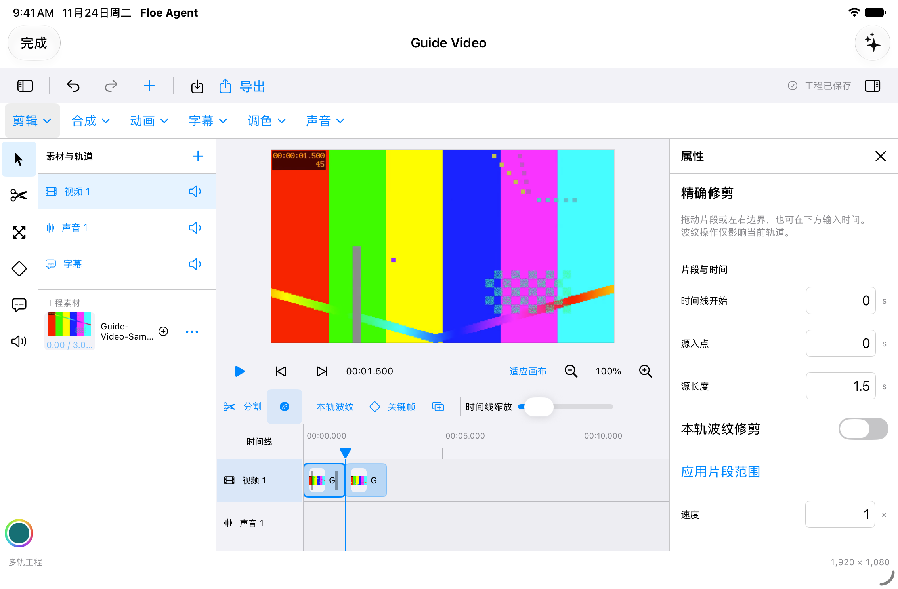

Floe Agent 使用手冊
概覽
本指南主要介紹 iOS/iPadOS。從安裝到第一個成果提供任務式教程。App Store、GitHub／Feather 與 TestFlight 的版本及核實日期統一見渠道狀態。GitHub IPA 需要自行簽名，TestFlight 可用性以實際測試組為準。各工作臺的適用版本見空間與專用工作臺教程。
模型連線、首次任務、檔案儲存和問題反饋的通用步驟見共通指南；本手冊說明本平臺的介面與能力。
本手冊介紹 Floe 的 AI 任務、手記、Office、圖紙助手、畫布與媒體，以及本地和遠端開發功能。Floe 面向 iPad 設計，也支援 iPhone；需要 iOS/iPadOS 26 或更高版本。
本手冊隨原始碼更新；已安裝版本請在設定中檢視，各安裝渠道的可用狀態見版本與安裝狀態。
開始使用
文件與創作
開發與連線
進階與幫助
1. 安裝與首次使用

iPad 上 Floe 中一個已完成任務及其本地網頁結果。 傳送第一條請求前，先核對模型和工作區。上方任務截圖來自 1.7.74（315）。本輪新增截圖取自 iPad 模擬器中的 1.8.72（393）。
- 透過官網提供的 App Store 入口安裝；你所在地區的可用狀態以商店實際頁面為準。測試版透過你已獲得資格的 TestFlight 組安裝，構建號、到期時間及“測試內容”以 TestFlight 為準。
- 如果使用 GitHub 或 Feather/AltStore，按照發布頁的安裝說明操作。GitHub IPA 為未簽名開發者包，需要你自己的簽名方式，不能當作 TestFlight 安裝包。
- 首次開啟完成引導。iPad 可使用多欄；iPhone 透過側欄按鈕切換入口，編輯器可全屏開啟。
- 無需模型即可先使用手記、檔案整理和畫布的核心功能；要呼叫 AI，先連線自己的模型服務商。
- 在“設定 → 診斷與關於”確認實際版本。反饋時始終提供這裡的版本和構建號。
推薦第一次操作：配置模型 → 新建一個測試任務 → 新增無敏感內容的文字 → 請求總結 → 開啟工具記錄檢查實際結果 → 在檔案面板檢查輸出。先用合成樣例熟悉流程，再處理重要資料。
設定嚮導
可選擇“輕量入門”“日常全能”“語音交流”“開發創作”，也可自行設定。推薦配置只幫助預填，所有選擇都會經過同一套流程；已有設定保持不變，之後仍可逐項調整。
| 分組 | 可以設定什麼 |
|---|---|
| 聊天與模型 | 連線服務、測試連線、選擇聊天模型 |
| 看圖與創作 | 看圖、圖片生成和編輯、影片、畫布助手 |
| 聯網搜尋 | 新增搜尋服務、測試及預設選擇 |
| 語音交流 | 輸入語言、聲音、語速、朗讀與打斷 |
| 檔案與工作空間 | 工作資料夾、本機執行環境、遠端電腦與程式碼倉庫 |
| 個性化與記憶 | 使用者畫像、SOUL.md、記憶及自動更新 |
| 許可權與隱私 | 操作審批、裝置功能及身份驗證 |
| 後臺執行 | 後臺音訊、畫中畫及其他後臺選項 |
| 同步與儲存 | iCloud、配置與憑據同步、下載資源 |
| 技能與更新 | 瀏覽和安裝技能、管理內容更新 |
每頁可以返回、繼續或留待以後設定。連線主模型後不會提前結束嚮導；最後的設定概覽可返回任何分組。暫時退出後可繼續，不需要重新填寫已經儲存的內容。
下載不影響繼續設定。 點選下載語音包、模型或執行環境後，可以立即進入下一步或開始使用 Floe。返回對應頁面可檢視同一下載的進度，不會重複下載。最後的概覽分別列出已設定、正在準備和稍後處理的專案。
下載顯示實際大小、進度和速度；到達 100% 後仍可能需要檢查或安裝，完成後才可使用。失敗、暫停或空間不足隻影響對應資源，可以稍後重試。關閉下載頁面或退出嚮導不取消下載；App 後臺和退出後的繼續處理受系統限制，重新開啟後會核對狀態並恢復或提供繼續操作。
下載中的聲音不會自動替換你之後選擇的其他聲音；執行環境安裝後也不會自動啟動。新使用者的 Apple Intelligence 預設關閉，可在支援的裝置上主動啟用；已有使用者選擇保留，不支援該功能也不影響使用其他模型。
幫助與指南
- 在側欄底部點齒輪，開啟設定 → 幫助與指南。可瀏覽分類，或在右上角的搜尋指南與設定輸入功能名，例如“實體鍵盤”或“會議”。內置指南可離線閱讀。
- 開啟一篇文章後，點右上角的清單圖示開啟章節目錄，選擇標題後正文會滾到相應位置。旁邊的放大鏡用於在本頁查詢。點格式調整文字和外觀。點正文里的圖片可放大。
- 用文章左上角的返回按鈕回到幫助首頁。點設定欄的完成退出設定，返回開啟幫助之前的任務或頁面。

1.8.72（393），簡體中文。
不清楚如何操作時，可以向當前助手提問。回答中的指南引用可開啟相關章節；出現開啟此設定時，點它進入對應設定，再自行調整。關閉幫助後返回原任務或檔案，草稿和進度保留。
例如，在簡體中文界面搜索“回車鍵”，點結果里的修改方法，再點開啟此設定。Floe 會開啟通用並高亮實體鍵盤 → 回車鍵。查看後可直接返回，選項只在你手動更改時生效。搜不到時，先用當前界面語言的功能名縮短關鍵詞，再試一次。

聯網更新指南失敗時繼續閱讀現有內容；更新 App 會保留裝置上較新的指南。指南與功能的適用版本仍以渠道狀態及安裝版本為準。
Mac Bridge 快速開始
Floe Bridge 是 Floe Agent 可選的 Mac 選單欄伴隨應用。它執行在 Floe 所在的同一臺 Mac 上，透過僅限本機的已認證連線，把終端、檔案與 MCP 能力交給任務，不需要 Linux 映象。它不是 iPad 到 Mac 的遠端橋接，也不開放區域網地址或經過遠端中繼。
Mac、macOS 與 Floe 的相容要求以所選版本的釋出說明為準，兩款應用須在同一臺 Mac 上執行。它與用於 iPhone/iPad 控制的 Floe iOS Bridge 是獨立產品。
- 開啟 Mac Bridge 版本記錄，選擇版本，再從對應 GitHub 釋出頁下載 DMG。安裝要求與可用校驗檔案均以該版本為準。
- 開啟 DMG，把 Floe Bridge 拖入“應用程式”，然後啟動。選單欄會出現 Floe Bridge 圖示。
- 在同一臺 Mac 的 Floe 中選擇這臺 Mac 發起連線。Floe 與 Floe Bridge 會分別顯示一次原生確認；核對相同驗證碼，並在兩端都允許。任一端拒絕，連線都不會建立。
- 只授予任務實際需要的許可權。終端任務訪問受保護目錄時，macOS 可能按目錄請求授權；螢幕錄製與輔助功能只在使用對應功能時請求。之後可在 macOS“系統設定”中檢視或撤銷。
- 在任務中使用該連線。斷開後，終端、檔案與 MCP 能力即不再對任務開放。
選單欄沒有出現圖示時，從“應用程式”再次啟動 Floe Bridge。首次開啟時若 macOS 請求確認，請按系統提示處理，不要繞過安全警告。連線被拒絕時，確認兩個應用在同一臺 Mac 上、版本滿足所選釋出說明的要求，並且兩端允許了同一個驗證碼。要斷開連線，使用選單欄 Floe Bridge →“連線與儲存…”→“斷開連線”；這會撤銷配對並結束該連線的終端任務。退出 Floe Bridge 會停止本地監聽，並結束仍在執行的終端任務。
2. 配置模型與輔助能力
雲端模型
- 開啟設定 → 模型與供應商。在右上角點 ＋，按用途選對話模型服務商、圖片生成/編輯服務商或影片生成服務商。對話通常先從第一項開始。
- 按服務商提供的資訊填寫介面地址、協議、模型 ID 和金鑰；模型顯示名不等於真實模型 ID。
- 測試連線，啟用服務商與模型，選擇預設 Agent 模型。
- 返回“新建任務”，確認輸入框附近的模型標籤顯示預期模型。
- 如果列表中沒有模型，檢查服務商開關、模型開關以及“在主模型列表中隱藏”。隱藏與停用不同：隱藏可保留輔助用途，停用會阻止新的選擇。

服務商和模型名稱支援橫槓、下劃線及版本小數點，例如 qwen3.5-plus、model_v2.1。真實模型 ID 必須按服務商提供的值原樣填寫。服務商顯示名會整理貼上帶來的換行及無意義隱藏格式，保留正常 Unicode 字元；超長名稱會提示 UTF-8 位元組數。
服務呼叫可能產生第三方費用。金鑰儲存在系統鑰匙串；不要將金鑰放入工作區、聊天截圖或公開問題單。
Floe 會在寫入前先校驗表單。欄位無效時用介面語言提示、本機不寫入，並保留已填內容。本機儲存與 iCloud 上傳分開報告：“已儲存在本機；iCloud 同步尚未完成”表示配置已在本機提交，可重試上傳，並不是儲存失敗，也不需要重新輸入金鑰。雲端記錄校驗失敗時會被跳過，本機原有配置保留。
在“新建文字/圖片/影片任務”中，直接點選 服務商 欄位即可開啟唯一一個可搜尋選擇器：內建服務商預設（含明確的手動/自定義選項）與已驗證目錄條目在同一個列表中，輸入時一起過濾（支援別名與已配置標記）。表單裡不再有單獨的預設行、“從目錄新增”按鈕或獨立目錄頁。選中後選擇器關閉，已填寫的其他內容（包括自定義顯示名）保持不變。選擇真正支援多種服務角色的服務商時，會彈出一次性的“額外用途”提示：起始角色固定，其他角色全部預設不選；可點“配置”“暫不配置”或直接關閉，已拒絕的角色不會再次提示。附加角色只有在源站、協議族和認證方式真正相容時才共用該連線的介面地址與金鑰；不同源站會顯示為“單獨配置”，使用各自可見的設定。連線身份（協議/主機/埠/服務商路由族/認證方式）變化時會清除已輸入金鑰，並拒絕把已儲存的金鑰靜默複用到新連線。
目錄後設資料按逐個模型核驗，不按整個服務商籠統承諾。新新增的模型會直接帶上目錄實際核驗過的能力（例如具備識圖能力的模型預設啟用影象輸入）；在後設資料出現之前就已儲存的模型絕不會被靜默改寫：Floe 會提供一次性的“模型能力更新”複查面板，逐模型列出將會獲得的能力（當前 → 應用後），只有你點“應用更新”才會寫入，也可以選擇“稍後”。你自己設定過的能力會記錄為你的明確決定——之後的目錄重新整理或 iCloud 同步都不會把它翻回去，關掉的能力保持關閉。目錄條目上的“支援：文字/圖片/影片”只表示該條目已核驗的角色，不代表做過真實推理測試；真正的相容性仍以第一次實際請求為準。GitHub Copilot、Azure、Amazon Bedrock、Google Vertex 在新增服務商時不再提供——Floe 無法在沒有 OAuth 或部署級端點的情況下執行它們——但已儲存的這些連線仍會保留並可繼續編輯。
在支援該能力的模型上還可設定思考強度。選擇自動時，Floe 會在每個全新輪次開始時請已配置的輔助文字模型為該請求選擇一次強度；這個決定在本輪內沿用，包括引導/轉向和續跑訊息，不會在中途重新判斷。你手動選擇的強度不會被改動。未配置輔助模型、輔助請求失敗或超時時，回退到模型自身支援的預設值。
火山引擎按量服務與 Agent Plan、阿里雲按量服務與 Token Plan 分別列為供應商。請選擇已購買的計劃；每項獨立儲存地址、金鑰和模型，儲存或測試不會切換到其他計費渠道。
套餐模型從公開目錄中選擇，也可手動填寫模型 ID；候選列表不代表賬戶已開通全部模型。點選測試連線會對你已選擇的聊天模型傳送一次小請求，可能計入套餐用量；開啟或儲存設定不會生成圖片或影片。火山 Agent Plan 的圖片候選與按量服務分開，本輪不提供該套餐的影片入口。阿里按量與 Token Plan 各自使用對應的圖片、影片服務；影片提交後繼續查詢同一個生成任務，查詢失敗不會重新付費生成。
聯網搜尋服務商
可新增 DeepSeek 網頁搜尋並使用獨立金鑰；目錄中可選擇是否返回網頁正文。長摘要和正文按服務商實際結果保留。頁面顯示簡要內容，助手可按當前上下文容量使用完整結果或繼續讀取。搜尋摘要仍需按其實際來源核對。
“設定 → 聯網搜尋”只顯示已新增的供應商。點新增供應商選擇服務或相容的自定義介面，配置賬戶後可測試搜尋。每個賬戶獨立啟停和排序。可在新增頁或設定 → 更新管理中重新整理供應商目錄；目錄更新保留已儲存賬戶和金鑰，預置供應商名稱自動更新，自行修改的名稱保持不變；其他配置有變化時可檢視後應用。
普通搜尋未指定條數時返回 5 條，長摘要會按結果預算收斂。當前任務允許時，已啟用的專業資料集透過同一個搜尋工具查詢，沿用所選賬戶。普通聊天和語音對話可發現並呼叫已啟用、已授權的工具，專業資料集仍需對應賬戶與許可權；臨時聊天保留讀取邊界。退出連續語音後保留原來的會話模式。
在火山引擎編輯頁選擇與金鑰匹配的賬戶：
- Agent Plan 豆包搜尋 — 使用 Agent Plan 金鑰，可選擇專業資料集（預設關閉，與主搜尋開關相互獨立；編輯頁顯示真實連線狀態）。
- 方舟 Responses — 使用普通方舟 API Key。在搜尋引擎中選擇 豆包搜尋 Custom 版時使用豆包搜尋引擎；選擇聯網內容外掛時同時使用頭條、抖音百科和墨跡天氣。
- 豆包搜尋 API — 使用單獨的豆包搜尋金鑰。
- 自定義端點（舊版） — 沿用已有的自定義端點。
聯網內容外掛預設同時啟用三個來源，不設獨立開關。Agent Plan 和豆包搜尋 API 可選擇查詢改寫與僅權威來源。現有預設搜尋服務商及其優先順序不變。
識圖、生成圖片、圖片編輯
在“設定 → 輔助模型”分別配置識圖、生圖和圖片編輯。能進行文字對話不代表支援這三種能力。圖片編輯需要新增原圖附件。
細字、尺寸標註或區域性結構看不清時，可以讓助手檢視原圖中的指定區域。區域性檢視保留原檔案，並把選中區域交給當前識圖流程。修改模型或頁面後應重新截圖，舊截圖只代表當時的狀態。
Apple 系統模型與下載式模型
- Apple 系統模型由系統管理；按介面顯示檢查裝置支援、Apple Intelligence 開關與模型就緒狀態。它沒有 Floe 的下載按鈕。
- 下載式 MLX 模型為 Beta，下載完成、載入成功和實際推理是三個不同階段。先用短文字驗證，再嘗試連續對話。
- 下載式模型採用文字路徑；附圖可透過 OCR 提取文字，但不能據此假定模型能理解影象語義。
- 本地模型和 Linux 共用裝置記憶體。遇到資源衝突，按介面確認釋放物件；取消確認不會授權停止其他任務。
- 停用與刪除不同：停用保留檔案，刪除會移除下載資源。反覆崩潰時保留當次日誌，勿用清空全部資料代替診斷。
3. 新建任務與選擇工作區
- 開啟新建任務。傳送前檢查輸入框下方的模型、專案、執行位置、模式和權限。點詢問可查看任務權限；要使用臨時會話，點頁面右上角的對話氣泡。
- 不選擇專案時，任務使用 App 內部私有工作區；選擇專案時，檔案操作歸屬於該專案。
- 新增所需附件並說明目標、輸出格式、儲存位置和完成條件。例如：“讀取附件，生成一頁摘要和待辦清單，儲存到當前工作區，完成後給出檔案連結。”
- 點選傳送。草稿會成為持續任務；後續訊息繼續使用該任務的上下文。
- 對外部資料夾，透過系統檔案選擇器授權。僅有路徑文字不等於已獲得目錄訪問許可權。
刪除私有任務可能清理其內部工作區；刪除專案任務與刪除專案檔案不是同一操作。重要結果先匯出或儲存到明確的專案位置。手記有獨立資料儲存，不隨聊天刪除。
4. 對話、計劃、目標與恢復
| 模式 | 適用場景 | 使用方式 |
|---|---|---|
| Agent | 實際執行任務 | 說明目標，檢視工具和許可權請求，核對產物 |
| Plan | 先討論方案 | 審閱計劃；接受前不把方案當作已執行 |
| Goal | 多階段持續工作 | 明確步驟、預算、完成條件；依據證據判斷完成 |
普通回車換行；支援時用 Command+回車傳送。輸入隨可用寬度換行，第三行出現“展開編輯”；繼續輸入時保留當前輸入位置可見。展開編輯與內聯輸入框共享草稿。任務執行中追加訊息可用於糾正需求，不必重建任務。
回答助手的問題。 助手可在當前任務顯示問題卡片，逐題選擇或填寫，也可語音輸入。必答問題等待你的回答；可選問題可以在其他工作繼續時保留，或等待指定時間後由助手採用明確標出的假設。未回答不會變成同意，也不授予操作許可權。允許通知時，後臺可直接回答支援的通知問題；臨時聊天的問題只留在本次會話。
實體鍵盤。 在“設定 → 通用”選擇回車換行或傳送訊息。選擇傳送時，按 Shift＋回車換行；Command＋回車仍可傳送。此選擇同時用於輸入框和展開編輯器，螢幕鍵盤保持原有行為。
選擇與查詢。 長按自己傳送的文字或助手回覆可選擇文字、拖動選區並複製。 從對話選單選擇“在聊天中查詢”，也可按 Command+F。用前後箭頭逐條跳轉，命中內容原位高亮，結束查詢不會改變草稿。左側搜尋入口可查詢已儲存的普通會話；多個詞同時匹配，引號內按完整短語查詢，結果顯示實際命中的那一行。
安排任務。 在側欄開啟任務中心，點工具欄的日曆圖示開啟安排任務。填寫名稱和任務內容，選擇工作區、執行時間和是否重復，核對表單底部的時區，再保存。
檢視定時任務。 與對話關聯的計劃顯示在導航欄下方，可開啟詳情檢視時間、引數和執行記錄。每次執行各自產生獨立任務。“立即執行”額外執行一次，保留原定時間；“跳過下一次”只跳過當前安排，“取消後續”保留已有記錄。單次執行成功不代表總體目標完成，助手須明確結束已經達成目標的安排。實時活動可以顯示正在執行的任務或最近一次等待，具體展示和觸發時間由系統安排。
切後臺或系統中斷後，回到原任務檢查最後一條工具結果，再選擇恢復或傳送“繼續”。對上傳、提交、付款等結果不確定的操作，先確認是否已經發生，避免重複執行。應用回到前臺不代表原程序一直存活。遇到有界暫停或副作用結果未知時，需要主動恢復：先檢查/核對最後一條工具記錄，再選擇恢復；僅做只讀檢查不會自動重新啟用已暫停的工作。
上翻歷史時可以停留閱讀；回到最新訊息後繼續跟隨輸出。左側會話長按後顯示操作選單，選擇“多選”才會出現選擇圓圈；點選“完成”退出。選單也支援置頂與取消置頂，置頂會話保留在所屬分組頂部，重啟後仍保留。
也可從任務中心或設定 → 資料管理 → 管理任務進行批次管理。選擇與全選只作用於當前篩選與搜尋下可見的任務。歸檔前會彈確認，說明將先停止所選任務自身正在執行的工作；已歸檔任務之後可在同一介面切換到“已歸檔”或到歸檔區恢復。刪除同樣會先停止其自身工作，並刪除每個任務的私有工作區，共享專案檔案保留。每個任務分別報告結果——失敗或未確認的任務保持選中、可直接重試；批次執行中可隨時停止，未處理的任務保持選中、不受影響。
5. 許可權、工具記錄與成果核對
在工具卡片中檢視執行過程，遇到授權請求時確認操作物件和影響。向前滾動會自動載入更早的工具記錄，無需點開單獨的歷史入口；具體工具卡片仍可展開檢視。
- 展開工具卡片，檢查輸入物件、目標工作區及結果。
- 遇到授權請求，先看物件和副作用，再決定允許或拒絕。
- 輸出檔案後，開啟檔案檢查內容；需要儲存重開的文件，關閉後重新開啟核對。
- 對遠端命令，檢查退出碼、輸出及對應主機；“命令已啟動”不等於執行完成。
- 發現錯誤時向原任務描述實際現象，並附錯誤提示或截圖。
在任務已授權的本地範圍內，普通 Office、PDF、圖片、影片和 CAD 編輯無需每一步都彈出確認。修訂檢查、可恢復儲存及輸出核驗繼續生效。寫入程式碼庫、目標無法確定、明確的破壞性覆蓋、外發及受保護 PDF 操作，仍按相應稽核或同意規則處理；使用者要求先預覽或審閱提案時，仍等待採用。
原生三維文件中的建模、材質、裝配和動畫編輯不額外請求人工或稽核模型確認，文件位於程式碼庫中也一樣。檔案訪問、修訂校驗和撤銷繼續生效；匯出檔案仍檢查儲存位置。
任務繫結的本地 Linux 來賓環境減少對日常命令的重複稽核，不把 Mac 宿主視為可隨意重置的來賓。遠端機器的風險修改繼續走現有稽核策略。共享來賓中的會話保留獨立歸屬與取消，停止或重置整個環境屬於單獨操作。
網頁、文件、工具輸出和記憶均不能授予新許可權。不要按檔案中出現的文字自動洩露金鑰或擴大授權。
子代理沿用當前任務的實際有效許可權：explore/research/execute 只是側重點提示，不是許可權等級；子代理的每次呼叫都走與主任務相同的授權、工作區、環境和寫入序列化路徑。子代理不能再派生子代理，也不能建立新的使用者可見任務——delegate 與 conversation.spawn 僅限主任務，並且在執行邊界被拒絕，而不只是從列表裡隱藏。同一任務的兄弟子代理之間可以交換有界訊息；訊息屬於不可信資料，不授予許可權，也不能重啟已結束的子代理。
子代理可自行使用 tools.list／tools.search 和 skill.list／skill.search／skill.read，按任務載入需要的工具和工作說明，不必每輪攜帶整個工具目錄。Skill 可指導指令碼、原生工具及已配置 MCP 的使用，但仍受同一任務許可權約束，讀取 Skill 不授予新許可權。已知工具無需先讀一份指南才能呼叫。
同一任務的父執行及其子代理可以透過獨立程序和執行會話共享同一個 Linux 環境。結果、工作目錄、標準輸入輸出和取消操作歸屬各自的會話：取消一個子代理不會停止其他使用者，停止整個環境屬於獨立的生命週期操作。指向同一已知目標的寫入沿用與普通任務編輯相同的協調路徑。
6. 檔案、編輯與同時修改

Floe 工作臺中在任務旁開啟的檔案。 從檔案面板開啟成果，核對內容，再儲存並重新開啟。
在任務或專案的檔案面板瀏覽檔案，選擇文字進入編輯器，儲存後再執行或分享。修改衝突時先審閱差異：可合併的內容與重疊衝突會分別處理，恢復副本不等於原件已儲存。
- 文字：儲存失敗或衝突未解決時不要執行舊內容。
- Office：出現衝突時保留兩份，預覽或匯出後再決定採用哪份。
- 手記：衝突內容可保留為獨立恢復副本。
- 恢復檔案：檢視介面提供的
Recovered Edits或對應恢復位置；確認新檔案完整之前不要刪除副本。
檔案助手。 在檔案內開啟助手，繼續該檔案已有的會話。收起面板會保留草稿；離開後可在任務中心的檔案任務中按檔案型別查詢，進行中、待審批和待處理的工作仍可從全域性任務入口找到。空閒時直接傳送；執行中可選擇引導或排隊，並按當前需要切換。
移到最近刪除、恢復或永久刪除檔案時，Floe 會先處理相關助手的執行狀態。看到“仍在停止”或“尚在收尾”時，按提示稍後重試，不要先刪除恢復副本。永久刪除前核對關聯會話和檔案範圍；操作只針對所選檔案及其助手，不清理其他任務。
壓縮包可檢視條目並進行受限預覽/解壓。格式支援與大小限制以介面結果為準；不要把歸檔裡的路徑或指令碼當作可信指令。詳見同時編輯說明。
7. 手記：匯入、搜尋與書寫

Floe 中開啟的手記文件及其工具。 支援空間的版本從空間 → 手記進入文庫。較早版本可從側欄直接開啟手記。
建立資料
- 開啟空間 → 手記，點右上角 ＋。要從頭做筆記，選空白手記、輸入名稱再點創建。同一菜單可新建會議筆記、思維導圖、筆記本與 Office 文件。已有文件可從 Floe 工作區或系統檔案中匯入。
- 要使用任務檔案，選擇“從 Floe 工作區匯入”，先選專案或會話，再選檔案。
- 匯入後開啟文件，確認頁數、正文和附件。匯入副本屬於手記，不是對工作區原件的實時對映。
從其他 App 分享檔案或用 Floe 開啟檔案時，可選擇“手記”“任務”或“畫布”。選擇任務或畫布後，可新增到已有目標或新建；已有任務的草稿會保留。手記中的匯入入口直接存入手記；任務中的附件入口直接新增到當前任務。匯入不會自動傳送訊息。
- 使用資料列表搜尋標題或正文。命中片段可幫助定位頁面；索引未完成時結果可能不完整，可在文件選單重新索引。點選文件內搜尋結果可跳到對應頁面並高亮匹配文字；部分 PDF 只能定位到頁。
- 標籤用於切換已開啟文件；關閉標籤不會刪除文件。
書寫與 Apple Pencil
選擇筆、熒光筆、橡皮或套索；再次點選當前筆或顏色圓點調整筆型、顏色、粗細及透明度。五個由小到大的圓點可快捷選擇粗細，滑塊可細調，筆跡預覽隨設定更新。PDF 匯入手記後使用相同的書寫設定。介面使用透明度時，0% 為實心、100% 為透明。先畫一小段確認效果。
捏壓、雙擊取決於 Pencil 型號與系統設定；不支援的硬體不會提供相同手勢。手指書寫需單獨開啟。套索選區與 AI 選區用途不同：前者操作頁面內容，後者提供區域性上下文。
關閉或切換文件前檢查儲存狀態；儲存失敗時先解決錯誤。回收站用於恢復誤刪資料，永久刪除前確認是否仍需附件或舊版本。
文件助手與資料授權
開啟文件助手，針對當前頁面或選區提問，例如“解釋這個表格，並把三個要點放在空白區域”。審閱修改位置，使用撤銷處理不合適的結果。文件助手的會話與普通聊天分開；普通聊天需要透過“新增手記資料”明確引用文件，並可撤銷授權。助手會先給出修改預覽，確認後應用，可用撤銷恢復。可將選定頁或整篇匯出為 PDF，或匯出 .floenote 文件包。不支援直接修改 PDF 原文或將手寫筆跡轉換為可編輯文字。
助手匯出。 先讓文件助手列出可匯出格式，再提出匯出要求。返回的檔案卡片帶有“預覽”和“分享”，每次開啟前都會核驗檔案。手記頁面可匯出 PDF，導圖可匯出 Markdown，Office／工程文件可匯出原始檔案。現代 Office 格式（.docx、.xlsx、.pptx）還可匯出 PDF；舊版 Office 格式使用原始檔案或 .floenote。所有文件型別都可匯出 .floenote，不會覆蓋目標位置已有的不同檔案。
文件封面與閱讀模式
手記中的 Office 文件儲存後，會按已儲存內容更新自動封面，包括第一頁上的筆跡。已有文件在預覽模式開啟時會補充封面；自定義封面仍優先顯示。如果提示預覽更新失敗，可點“更新預覽”重試，已經儲存的正文和筆跡會保留。
文件封面。 手記文件可以用自定義封面替代自動預覽：開啟文件選單，選擇 設定封面 或 更換封面 使用照片或檔案，選擇 恢復自動封面 返回自動封面。封面與文件正文相互獨立：設定或恢復不會改變內容修訂、不進入撤銷歷史，也絕不修改原始 Office/PDF 內容；舊封面在其他資料仍引用時不會被丟棄。手記助手的封面操作針對當前任務中已選擇的文件（notes.cover，read / set / restore）：read 返回封面狀態，set 與 restore 必須攜帶上次讀取時得到的內容修訂與封面修訂，過期請求會被拒絕而不是覆蓋更新的封面；只能使用所選文件引用的圖片或該任務工作區內已授權的檔案。不可用的圖片會被拒絕並保留原封面。含自定義封面的 .floenote 文件包會被不支援封面的舊版 Floe 拒絕，而不是匯入不完整。
閱讀模式。 文字檔案與純文字手記可以用同一檔案的只讀 閱讀模式 開啟：原檔案絕不改變，原編輯器仍然可用。閱讀模式提供字號、行距、欄寬、外觀（含暖紙主題）、目錄與文內查詢，並且只在檔案仍匹配時恢復上次閱讀位置（任務私有工作區中的檔案不儲存位置）。它只顯示文字——含墨跡或圖片的手記按文字閱讀，墨跡與圖片保持原樣。編碼自動識別（UTF-8、UTF-16，以及平臺確實提供編解碼器時的 GB18030）；識別不確定時可手動選擇自動、UTF-8、UTF-16 LE/BE 或 GB18030（僅在可用時），無法解碼整個檔案的選擇會被明確拒絕，而不是用替換字元顯示。超過 64 MiB 的檔案會被拒絕而不是部分載入；超長檔案在行索引寫滿後可能不再顯示行號。其他格式保留原有原生檢視器（PDF、Office、CAD、圖片、媒體）——閱讀模式絕不把它們轉換成文字。
空間作品（較新構建）。 從 1.8 系列構建開始，側欄的“空間”入口彙集你的個人檔案與可編輯作品——文件、繪畫/圖片、影片、CAD、音樂、會議等——與手記文庫並列。空間作品屬於你個人，而不屬於某個聊天任務：刪除聊天不會刪除作品，刪除作品也不會影響任務或專案檔案。詳見空間與專用工作臺。
添加一個圖形並確認保存
- 開啟空白手記，點書寫工具欄中的方框 ＋（插入），選擇橢圓。圖形會出現在當前頁。插入菜單也提供矩形、直線和箭頭。
- 點標題欄的撤銷移除圖形，再點重做恢復。想騰出書寫空間，可用編輯器左側的小折疊箭頭收起文件標籤和標題欄，再點一次展開。
- 用左上角返回按鈕回到文庫。開啟剛才創建的手記，檢查圖形是否還在。要交給其他人閱讀，從匯出選擇 PDF；需要以後繼續在 Floe 編輯時，保留手記或匯出 Floe 文件包。

8. Office：編輯、批註、儲存和重新開啟
| 功能 | 適合做什麼 |
|---|---|
| Word | 寫報告、方案和正文，用段落樣式、清單、圖片和表格組織內容。 |
| Excel | 做預算、清單和資料表，用公式計算匯總，按需排序和篩選。 |
| PowerPoint | 做彙報和課件，在幻燈片導航中增刪、複製與調整順序。 |
從空間 → 檔案 → ＋ → 文件…新建，或匯入現成的 DOCX、XLSX、PPTX。編輯後點功能區的保存圖示。選畫筆可用 Apple Pencil 批注。在手記里，文件助手可以查看指定頁面或單元格範圍，請先核對它提出的修改再應用。
分享或列印時，開啟匯出格式 → PDF或列印…，選擇工作表、範圍或頁碼。如果顯示設定已修改，先點更新預覽，再核對頁數和內容後存儲或列印。要繼續修改公式、正文或幻燈片，請保留可編輯原件。

9. 本地終端與 Linux 效能配置
任務工具面板 → 終端 →“本地工作區”；同處可切換“遠端 SSH”。終端操作當前任務工作區，先確認位置再執行修改命令。
- 開啟本地終端。缺少 Linux 映象時，使用明確顯示的安裝入口並等待校驗完成。
- 首先執行
pwd、ls等只讀命令確認目錄。Linux 程式必須在可用客體環境中執行。 - 讓助手第一次執行 Linux 前，先檢查狀態並按任務選擇核心數和記憶體。可以直接說：“先檢查 Linux 環境，按並行編譯任務選擇 2 核，啟動後確認實際核心數。”
- 核對工具返回的實際資源；資源不足或映象不支援時，按錯誤處理，不把請求值當作分配成功。
- 完成任務後停止不需要的服務，必要時結束終端或客體。關閉一個面板不一定結束應用級 shell 會話。
本機使用一臺共享的 ARM64 Linux，支援 1–4 個線上核心。在設定 → 執行環境統一調整 CPU 和記憶體；同一專案的後續任務複用依賴，不同專案的檔案與可寫環境分別管理。
只修改 CPU 時會線上調整，不重啟 Linux，也不中斷已有專案會話。更改記憶體前需要停止正在執行的專案。不指定資源時保留已儲存的配置；新的共享環境預設使用 2 核、512 MiB。更多核心只對能夠並行的任務有幫助。
後臺音訊與畫中畫獨立工作，關閉懸浮視窗不會停止 Linux；需要停止時請使用執行環境的“停止”操作。系統後臺限制仍然適用。升級優先複用已驗證資源和相容的專案狀態，缺失或損壞時使用修復或重新下載，不必刪除專案檔案。
同一臺 Mac 的終端橋接
本機執行環境使用共享的 ARM64 Linux。CPU 和記憶體在執行環境設定中統一調整；同一專案的後續任務可複用依賴，專案檔案保持獨立。恢復初始狀態會停止相關工作並重置執行環境和依賴，保留專案檔案、聊天和已安裝 Skill；需要使用的依賴隨後重新準備。重新下載用於修復基礎資源，下載和校驗完成前保留現有資源。
在 Apple 晶片 Mac 上，可選的 Floe Bridge 提供這臺 Mac 的終端，無需先下載 Linux 執行環境。入口為設定 → 執行環境 → Mac 連線。新的未繫結任務可使用已連線的 Mac；已有 Linux 任務保留原環境。橋接斷開後，重新連線檢視原作業，或為新任務選擇備用執行環境；不會自動重放命令。
Mac 原版技能與 Linux 適配版分別保留檔案和版本。工作區、任務輸出和受管理依賴集中在 Application Support/Floe Bridge 下，可從橋程式的儲存頁面開啟或清理；使用者自行選擇的外部資料夾會保留。橋程式Mac Bridge 1.1.3 已有獨立釋出；請按所選版本的安裝與系統要求操作。橋程式詳情。
網頁服務與全屏終端
開啟工作區內的 .html 或 .htm 檔案，點“執行”即可預覽頁面及同目錄資源。對於 .py、.js 或 .sh HTTP 服務，選擇“作為網頁服務執行”。確認所屬任務和埠；沒有所屬任務時，可直接建立執行任務。服務指令碼需讀取 PORT 並監聽來賓網路介面，靜態頁面不需要伺服器程式碼。頁面響應後出現“預覽”。啟動失敗時檢視日誌。關閉視窗保留服務；使用“停止”或環境的本地服務列表結束。App 被系統結束後需重新啟動服務。
終端狀態列的展開按鈕進入全屏，“隱藏”返回原工作區並保留會話。執行終端沒有輸出時會明確顯示等待輸出；程序錯誤與退出狀態顯示在視窗內。
普通“執行”適合有明確結束點的指令碼；HTTP 服務請選“作為網頁服務執行”，以便檢視健康狀態、預覽並單獨停止。僅有日誌不代表埠已就緒。埠被佔用時先檢查已有服務，避免重複啟動；工作區或任務不可用時按視窗錯誤修正，不要在其他目錄盲目重試。全屏終端與原面板使用同一會話，隱藏視窗不會主動終止它；Ctrl-C 用於中斷當前前臺命令。
終端和埠
終端工具欄提供字型縮放、複製輸出、貼上、清屏、Ctrl-C、Tab、Esc 和方向鍵。清屏保留程序；結束會話才會關閉終端。向上檢視歷史時不自動追隨新輸出。貼上超過輸入佇列上限時會提示分段輸入。
在埠管理中先選擇環境，再新增或編輯規則。來賓埠是 Linux 中服務監聽的埠；請求主機埠留空表示自動分配。實際繫結埠可能因衝突改變，應複製當前顯示的可用地址。選擇“僅允許本機訪問”可限制為裝置迴環地址，關閉此選項才允許區域網訪問。
“已儲存”不等於已監聽：需要虛擬機器已啟動，且網頁服務正在對應來賓埠執行。停止虛擬機器後規則保留，但地址不可訪問。模型使用 linux.port 時先查詢，再在當前任務環境中修改規則；不能據此宣稱網頁服務已經啟動。
10. Python、Node、依賴與執行程式碼
依賴入口：“設定 → 執行環境 → 選擇專案或會話 → Python·PyPI / Node.js·npm”。先確認所選環境，再安裝；專案檔案依賴與共享環境依賴不是同一寫入位置。
Debian 軟體源可選擇官方源或清華 TUNA。先啟動環境再應用，重新整理軟體索引後即可安裝；選擇系統現有可恢復原 Debian 配置，其它倉庫保持可用。也可直接透過 Linux 命令新增或修改軟體源。Python·PyPI → 軟體源提供官方、TUNA 與自定義地址。明確儲存的 Python 源會用於此環境的受管安裝、Shell 命令和終端；命令自行指定的源優先生效，已安裝的軟體會保留。
命令使用任務已選擇的執行位置：本機 Linux、已連線的 Mac 橋程式或 SSH 主機。軟體包必須適配實際系統與架構，不同系統的二進位制包不能混用。
程式碼檔案可在完整 IDE 中選擇“執行”，先看執行目標與將執行的命令。儲存失敗或衝突未解決時先處理檔案。遠端單檔案執行不是整專案同步，需要遠端具備對應直譯器、依賴及所需助手服務。
用 pip list、python3 --version、node --version 等核對真實環境。包安裝卡住時檢查下載、網路和相容性。詳見本地 Shell與IDE/語言說明。
任務選單中的任務執行位置顯示當前繫結。選擇目標並檢查後，可檢視檔案、所需依賴和不再可用的技能，再點“準備並遷移”。更改預設位置隻影響新任務。遷移前先關閉終端和服務；關閉頁面不停止準備，切換前取消仍保留原位置。準備暫停時可重試或取消；切換後斷連只需重連目標，不重跑舊命令。瀏覽、文件和繪圖繼續在 Floe 中使用。
11. Git 與 GitHub Actions
- 在檔案檢查器開啟“原始碼管理”，檢視是否為倉庫及當前分支。
- 檢查逐檔案差異，只暫存本次需要的修改，填寫提交說明後提交。
- 推送前確認遠端和分支；有衝突時審閱並解決，不將失敗的同步視為成功。
- 在“設定 → GitHub 與原始碼管理”透過裝置授權或 Token 連線賬戶；憑據只進入安全儲存。
- 在 IDE“執行 → GitHub Actions”選擇倉庫、分支和工作流，審閱上傳快照後提交。安裝工作流模板會寫入倉庫，需明確操作。
- 返回執行面板檢查狀態、日誌與產物。關閉 App 不會取消 GitHub 構建，取消也要等伺服器確認。
雲端 Linux/macOS 產物不能直接作為 iOS 程式執行。原始碼管理的恢復副本用於挽回誤操作，不能替代長期備份。詳見雲端構建說明。
12. 遠端裝置、桌面與網路診斷
在“設定 → 主機與遠端會話”儲存裝置及所需協議。SSH、VNC、經 SSH 隧道的 VNC、Telnet、TCP 和 BLE GATT 能力按配置分別啟用；只有裝置名稱不能產生連線能力。
“作為遠端執行環境”開關決定是否按執行環境路徑檢查和安裝 Floe 遠端助手；普通管理目標不應被強制安裝。連線前確認主機身份、目標目錄與認證。Telnet/普通 TCP 不提供加密，應使用可信網路或已配置隧道。
診斷時按順序檢查：裝置可達 → DNS → 埠 → 身份認證 → 命令與目錄許可權。長命令需用其返回的任務標識查詢；不要為找結果而重複啟動命令。臨時連線與已儲存裝置的永續性不同。BLE GATT 不等於任意傳統藍芽串列埠支援。
藍芽僅在明確掃描或連線時初始化。GATT UUID 應為 4 位、8 位十六進位制數，或標準 128 位 UUID；無效輸入會在呼叫系統藍芽 API 前返回錯誤。
13. 瀏覽器、網頁預覽與登入
任務瀏覽器可顯示助手操作的頁面。在工具記錄中核對實際網址和操作結果。涉及登入或人工驗證時在可見頁面操作；不要把驗證碼或金鑰寫入工作區。
本地網頁預覽使用當前工作區的檔案服務。服務啟動、瀏覽器載入與頁面功能可用須分別確認。外部資源、跨域請求和網路策略可能導致頁面缺項。瀏覽器的登入會話不等於遠端 SSH 憑據。詳見瀏覽器協議。
瀏覽器接管與交還
位址列展示真實地址，本地網頁也包含協議、主機、埠和路徑。點地址可修改，選單可複製地址。全屏按鈕保留當前標籤、頁面和表單；全屏切換不重新開啟網頁。
iPad 使用標籤欄切換網頁，iPhone 使用標籤概覽。任務瀏覽器最多開啟六個標籤；關閉最後一個標籤後顯示空白頁。瀏覽器設定可選擇連結開啟方式和網站版本。“網站資料”可檢視已儲存的網站並刪除其資料。
高階瀏覽器功能預設關閉。開啟時需確認風險，並授權接收資料的模型服務商。授權後的工具可訪問 Cookie、網站儲存，或使用瀏覽器登入狀態讀取網頁和下載檔案。這些資料可能使服務商獲得賬號訪問能力，請只授權你信任的服務商。關閉高階功能會停止相應訪問，普通瀏覽仍保留登入狀態；該功能不讀取 Safari 或鑰匙串資料。
接管後，模型仍可分析、讀寫已授權檔案和使用其他工具，但不能點選、輸入或導航當前瀏覽器。完成手動操作後點選“完成並交還模型”。“已通知原任務”表示通知已進入原任務輸入通道，不代表模型已完成後續工作。模型應重新觀察頁面後繼續。原任務已經結束時，點選“繼續任務”明確恢復原任務；失敗提示可重試，不必反覆新建會話。交接通知不包含密碼或表單內容。
14. 工程圖紙與圖紙助手
- 從檔案面板開啟支援的 DXF/DWG、三維網格或 PCB 製造檔案，等待真實內容顯示。
- 點選“全屏預覽”，檢查圖層、縮放和方向。出現“無法預覽”時保留原件和錯誤文字。
- 本地可編輯 DXF/DWG 可進入“編輯”，選擇圖元或新增線、矩形、圓、圓弧、多段線、單行文字、原生標註與引線，並進行圖層、物件捕捉、測量、修剪/延伸/偏移以及按數值移動/複製/旋轉/縮放/映象。先在副本上驗證儲存重開。
- CAD 畫筆與 Office 畫筆不同；格式、線寬和儲存能力以當前引擎及實際輸出為準。儲存會重新編碼並重新校驗後才覆蓋原件；3D 圖元、塊、外部參照、樣條和代理內容保持只讀，絕不展平；未定義單位時保持圖紙單位。圖紙編輯不等於原生 3D 建模：畫布中的 3D 模型節點和任務內的原生
.floecad文件可進入同一 3D 工作臺（見第 15 章），並非所有匯入的 3D 檔案都可編輯。 - 開啟圖紙助手（Drawing Assistant），針對當前圖紙或選區提問、測量和檢查幾何。助手可定位並高亮相關圖元，用顏色顯示新增、修改和刪除的建議。檢視預覽後確認應用，可用撤銷恢復；應用前先儲存手動修改。
- 對原生
.floecad（3D 工作臺的繪圖與裝配服務），助手必須指明要執行的操作，例如drawing.addPage或assembly.addInstance。缺少或無法識別操作時，現在會給出明確的結構化錯誤並列出已知操作，而不是靜默降級為只讀讀取；接近的誤寫會得到Did you mean 'addPage'?之類的提示。引數不確定時，讓助手先用對應服務的capabilities發現（drawing、assembly、script或mesh）——完整操作目錄按需分頁返回，不會塞進每一次請求。繪圖/裝配的修改仍走普通 propose → apply 路徑，沿用任務自身的授權（普通已授權文件無需逐次工作臺確認）；圖紙的 PDF/SVG/DXF 匯出需要 drawings 查詢返回的頁面 ID。工程鏈路為 建頁 → 投影 → 儲存 → 匯出：只有真實引擎儲存並重新開啟透過後才接受結果，且只使用引擎實際支援的匯出格式。
15. 畫布、影象、音影片
自由編輯器：用創意畫布組織素材
創意模式的畫布適合把還在變化的想法和素材攤開。籌備發佈時，可以把目標寫在左邊，參考圖放在中間，候選方案放在右邊，再用便利貼記錄每一版的取捨。文字、圖片、文件和模型各自是可選擇、移動和重新開啟的物件。

| 你想做什麼 | 用哪個入口 |
|---|---|
| 在一塊看板上並排放草稿、參考圖和方案 | 創意模式 → 新建畫布。 |
| 畫流程圖、關係圖，重點是形狀和連接關係 | 空間 → 概覽 → 圖示。 |
| 裁圖、疊圖層、加透明背景，交付一張圖片 | 空間 → 概覽 → 繪畫／圖片。 |
| 留下手寫、閱讀批注，或按頁整理長期資料 | 手記。 |
- 開啟創意模式 → 新建畫布 → 空白畫布。從底部點 ＋ → 便利貼，寫一句目標，點頂部勾號結束輸入。便利貼仍處於選取狀態，可以挪到看板一側。
- 再用 ＋ 加文字、形狀或其他內容。用便利貼記錄短想法，用文字做看板標題，用形狀劃分區域。需要看細節時放大，需要重新佈置時回到選擇工具移動物件。
- 要繼續編輯專業檔案，開啟畫布中的對應節點。例如雙擊 DWG 或 DXF 節點進入圖紙編輯器，點完成更新該節點，點製作變體把另一版加為新節點，便於並排比較。
- 要讓 AI 生成素材，先確認所選模型支援該類型。從生成節點填寫要求，並明確連接要作為輸入的節點。運行後開啟新增的成果節點核對實際內容。手工擺放便利貼、圖片和文件時可以直接開始。
- 點完成返回創意模式，重開同一畫布，確認物件、位置和關係都已保留。交付單張圖片或一份設計檔案時，在對應的專用工作臺匯出，再開啟成品核對。

在媒體工作臺選擇檔案，設定裁剪、剪輯區間、字幕或匯出格式。先預覽，再執行匯出，最後播放輸出檢查時長、聲音、字幕位置和畫面。保留原檔案，避免只保留縮圖。
生圖、影象編輯、影片生成與本地轉換是不同能力，可能需要不同服務商及額度。模型能力和引數以配置頁面與實際介面為準。詳見畫布架構。
畫布中的圖紙編輯器會保留未保存的草稿，切換全屏時也可繼續上一步編輯。畫布備份包含媒體專案、素材和 CAD 草稿。
媒體工作臺：專案、編輯與匯出
影象與影片編輯現已合併為一個工作臺，可從檔案頁、工作區檔案預覽和畫布進入。 橫屏寬屏 iPad 上左側是素材/圖層，中間是大預覽，右側是屬性，底部是影片時間線； 豎屏 iPad、窄分屏與 iPhone 會優先展示大預覽，其餘面板收進抽屜，避免預覽被擠成 窄條。
- 圖片：裁剪、移動、縮放和旋轉；管理圖層，新增文字或手繪，調整顏色、模糊、銳化、馬賽克和濾鏡。可用矩形、橢圓或套索建立選區，再加選、減選、反相、羽化或建立蒙版。
- 影片：在主軌新增片段，裁剪、分割、排序、變速或調整畫面；在音樂軌新增配樂、調整音量和淡入淡出；在字幕軌新增文字或轉錄所選片段。支援硬切和交叉溶解轉場。
開始一次圖片編輯。 開啟空間 → 概覽 → 繪畫／圖片，創建作品。圖層區的 ＋ → 繪畫圖層 會新建透明繪畫層。選取目標圖層，調整畫筆大小、硬度與不透明度；左側用於選擇工具，右側顯示所選工具或圖層的屬性。點匯出選擇格式和透明背景，再保存結果。

做一張透明 PNG。 在繪畫／圖片工作臺點頂部匯入圖示，選擇帶透明區域的 PNG。圖層清單出現素材後，點背景行的眼睛隱藏白底，檢查預覽是否出現棋盤格。若仍然全白，也檢查素材自身是否帶白底。
- 點匯出，選擇 PNG，開啓保留透明背景。需要白底副本時，再關閉該開關匯出一次。
- 透過分享已匯出檔案把成品保存到系統“檔案”，開啟檢查尺寸與背景。需要驗證透明度時，把 PNG 放在有色底上查看。輸出根據畫布或匯出設定生成，核對尺寸時使用匯出設定中顯示的數值。
- 從空間 → 檔案按名稱重開原作品，檢查素材層和背景層開關。繼續改圖層時開啟這份作品。

剪輯一段影片。 開啟空間 → 概覽 → 影片，創建專案。用頂部匯入圖示選擇本機影片。等素材進入時間線後，點選片段，再點上方時間標尺移動播放頭。點分割後檢查時間線上是否出現兩個片段。選擇匯出 → 匯出 MP4，等待完成，開啟匯出的檔案核對畫面和時長。需要拿到可繼續編輯的版本時，可選擇完整工程包。

- 儲存與繼續編輯：專案自動儲存。點選工具欄的資料夾按鈕檢視已儲存專案，恢復圖層、時間線與編輯歷史。再次開啟同一素材時，可選擇“繼續編輯”或“新建專案”。
- 儲存失敗：當前編輯會保持開啟。可重試“儲存專案”、繼續編輯，或明確放棄未儲存的更改。儲存完成後可正常關閉；放棄更改會保留已儲存版本和原始素材。
- 匯出：圖片支援 PNG、JPEG、HEIC，可設定尺寸、質量等；影片支援 H.264、HEVC，可設定解析度和幀率。匯出後可從工作臺的分享入口存到系統檔案。空間作品的匯出歸屬於該作品，通過任務檔案開啟的工作臺則使用任務工作區。
- AI：開啟 AI 抽屜，選擇素材與模型，檢視引數和費用說明後提交。接受候選結果後，會作為新圖層或片段加入專案，仍可撤銷。關閉工作臺後任務和候選結果會保留；生成中斷時先檢視任務狀態，避免重複提交付費請求。
補幀與超解析度
video.interpolate 與 video.superResolution（能力清單 media.capabilities 會一併列出）共用同一個處理器；結果會報告實際使用的引擎與重新開啟輸出後測得的計數，失敗或取消不會留下輸出，也絕不修改原始檔。
quality使用 Apple VideoToolbox 的幀率轉換/超解析度；lowLatency使用低延遲變體（補幀只支援 2 倍）；coreml使用已安裝的 RIFE 4.25 Lite 或 Real-ESRGAN x2plus/x4plus 模型包；metalFX是 GPU 空間放大，不是學習式超解析度，MetalFX 補幀會被明確拒絕。overwrite預設關閉：輸出已存在時會被拒絕，除非顯式傳入overwrite=true；即便如此也是先寫暫存檔案再原子替換。HDR（BT.2020/PQ）與帶透明通道的源會被明確拒絕，不會靜默轉換。- Core ML 模型只有在 Floe 重新校驗模型包每個檔案的雜湊並完成一次有界的樣例推理（或複用位元組、版本和執行環境標記都匹配的快取資格）後才會報告為
runnable。只安裝模型包會顯示“尚未取得資格”，不會靜默執行。 - 可用性按宿主區分並分別報告：VideoToolbox 幀處理在 macOS 資格主機上已驗證，物理裝置上預期可用，但 Apple 的幀處理標頭檔案不支援模擬器；Core ML 推理已在 macOS 驗證，物理 iPad 驗收仍待進行。不要把 macOS 結果當作物理裝置結果。
3D 模型：統一工作臺
原生 3D 編輯器在 iOS 和 iPadOS 上提供。建模、編輯、渲染與儲存均在裝置端進行；助手使用你選擇的本地模型或雲端供應商。
在畫布內，Floe 只有一個 3D 建模建立入口：開啟底部插入選單（+ ▸ 3D 模型（統一工作臺））。它會建立一個由畫布持有的原生 .floecad 節點，並開啟與檔案預覽相同的全屏工作臺。3D 全景 仍是獨立的全景圖片檢視節點。
- 編輯：雙擊節點或使用節點上的編輯操作。工作臺操作同一個實時文件會話；完成 關閉工作臺。關閉不會改動畫布節點——應用到畫布 把更新後的模型寫回原繫結節點（保留 ID、名稱、位置、尺寸和連線），建立分支 新建節點且原節點不變。文件尚未繫結節點時，新增到畫布 會讓你明確選擇目標畫布；Floe 不會猜測目標。從檔案預覽開啟且多個節點引用同一文件時，Floe 拒絕猜測，要求你從目標畫布節點開啟後再更新。
- 連續修改：任務中的
.floecad檔案和畫布繫結的文件使用同一個工作臺。可讓助手讀取現有建模步驟，再修改尺寸、孔徑或圓角，並繼續撤銷、重做和儲存。匯入的網格不會憑空獲得引數化歷史；模型重建後無法確認的面、邊需要重新選擇。具備工具能力的本地模型也可使用 CAD 操作；純文字模型透過幾何查詢和測量檢查結果。 - 草圖曲線：選擇邊界後修剪或延伸曲線。橢圓、樣條保持精確形狀，關聯偏移按設定法線距離跟隨源曲線；尖角、塌縮或自交時保留原內容。
- 圓角與倒角：在工具欄選擇圓角或倒角後，可切換為變半徑圓角、兩距離倒角或距離與角度倒角；後兩種可交換兩側。變半徑圓角的兩端使用同一半徑，中部可單獨調整，適用於獨立的開放邊。選邊不合適或尺寸超出範圍時會保留原模型。手機和窄屏在底部直接顯示引數，名稱與輸入框成組換行；次要選項按需展開，保留模型畫面和當前數值。
- 數值與設定：選中物件的尺寸在窄屏自動分行，長數值完整顯示。數字鍵盤可直接輸入並確認；複製開關顯示選中狀態，常用設定可從更多選單首屏開啟。
- 匯入模型：匯入詳情列出保留與不保留的內容。無法確定原始檔單位時，先選擇單位並核對尺寸；原檔案保留，不會把動畫或完整場景結構冒充為可編輯建模步驟。
- 網格檢查：清理後會列出仍未修復的問題；無法自動修復的缺陷會明確提示，保留原模型。簡化會保護邊界與貼圖接縫，在預覽和檢查詳情中顯示取樣偏差及體積變化；沒有變化時不增加撤銷記錄。
- 裝配關節：新增鉸鏈或滑塊並設定行程上下限，修改數值驅動關聯零件，也可保留限位內自由運動。“檢查運動”可檢視取樣行程和干涉，不改模型。受支援的具名原生面、基準面和軸隨源修改，失效引用需重新選擇。
- 材質：選中實體或可識別的面後開啟材質面板，設定顏色、金屬度、粗糙度、透明度與自發光，或從檔案、照片選擇貼圖。貼圖可使用模型原有座標，或調整投射、尺寸、旋轉和偏移。點應用後可撤銷；取消保留原外觀。我的材質可跨文件複用，刪除庫中記錄不影響已經應用的材質。
- 匯入貼圖：選擇圖片、對應通道及保留原圖或轉為較小 PNG，預覽結果後再應用。超出容量時可調整尺寸；準備失敗或取消會保留已有材質。
- 展示：頂部切換到展示，選擇影棚、日光或暗色環境，並調整燈光、背景、地面與陰影。也可讓 Floe 調整這些設定，與工作臺共用當前選擇，修改後可撤銷。模型仍是同一份文件。PNG 使用當前展示畫面；GLB 攜帶實際材質與貼圖。STEP、STL 等格式按各自能力匯出，不保留它們不支援的外觀。
- 新建模型的取消與保留：透過底部 + ▸ 3D 模型（統一工作臺） 新建模型後，工作臺會提供 取消 與 儲存並保留，直到你確認接受。取消：未編輯過的新模型會連同剛建立的節點和本機文件一起移除——不會留下空節點或孤立檔案；若草稿已經編輯（或位元組無法再驗證），取消 會把它保留為可恢復草稿並明確提示。儲存並保留 會保留有效文件和節點繫結，是儲存/保留操作，不是丟棄。
- 舊版 3D 場景：既有 3D 場景節點保持只讀預覽，只有你明確開啟編輯時才會轉換。轉換前會先顯示 3D 場景遷移 面板，列出已知視覺差異，再開啟工作臺。
- 轉換保留的內容：節點 ID、名稱、位置、尺寸和連線；各物件變換、材質與隱藏狀態；相機、燈光和背景。五種舊圖元（圓角方盒、球體、圓柱、圓錐、平面薄板）會成為工作臺毫米單位下的真實網格（舊版米 ×1000）。不會偽造引數化特徵歷史。
- 可恢復原件：轉換前會把精確的舊場景和完整節點備份在本機。核對轉換結果前，請保留 App 資料。
- 已知差異：光照強度按工作臺比例歸一化（精確原值保留在備份中）；陰影使用平面地面投影，替代舊版陰影貼圖。
- 無法轉換時：不會寫入任何內容。面板會列出具體不可用的值（例如非有限數值、零/負或超範圍縮放、無效顏色/相機/燈光、重複物件 ID），節點保持只讀預覽。
逐步轉換與恢復說明見統一 3D 與設計流程遷移。匯入的 DWG/DXF 圖紙不是原生 3D 模型：只有二維圖元可編輯。
四個入口共用的設計流程
同一套設計流程（簡報 → 規範 → 凍結輸入 → 候選 → 採納/拒絕/分支 → 驗證匯出）無需新建工作區即可使用：
- 創作起始：畫布主頁 → 快速開始。1.7.30（271）及更早的構建會開啟設計需求入口；從 1.8 系列構建開始，同一入口改為在任務內直接用自然語言開始（見下方說明）。已儲存的需求、規範和候選在兩種路徑下都會保留。
- 當前檔案：在檔案預覽中開啟工作區檔案 → 設計流程。僅限可寫的工作區檔案；雲盤/網路副本為只讀，沒有設計來源。
- 聊天附件：長按（或右鍵）訊息中的檔案或圖片附件 → 從此附件開始設計。採納結果會作為新附件返回同一個原始任務；原附件不會被修改。
- 畫布節點：畫布檢視選單（⋯）→ 設計流程——即原有畫布面板。
較新構建（1.8.x）。 1.8 系列構建支援在同一任務中直接用自然語言開始設計：描述你想要的成果即可，沒有型別選單，也沒有必填的目標/受眾表單，之後用後續訊息繼續。它區分三種工況——製作新成果、在凍結修訂內修改並保留範圍外內容、以及重構（重構會先確認必須保留的內容、資料、功能與格式，然後才重新生成）。候選先預覽/對比，只有你確認後才採納；發生修訂衝突時保留你的手動修改、絕不靜默覆蓋；聊天附件的結果回到原始任務。App Store 的 1.7.74 正式版不包含該入口。
面板中需要確認的要點：
- 先儲存簡報/規範，再 凍結當前來源，之後的編輯不會改變某次執行的依據。
- 創作需求始終只有一個目標/受眾編輯器和一個 儲存需求 操作，並會顯示人類可讀的請求輸出型別。需求會在任何素材產生前儲存；儲存後、等待首個結果期間，簡報與規範仍可編輯，之後的修改同樣不會改變已凍結的那次執行依據。
- 候選只是提案。對比 顯示有界差異；採納 會在 Floe 可寫入的來源上就地更新，在只讀來源上返回新內容。拒絕 不改動來源；恢復上一修訂 以追加新修訂的方式恢復，不改寫歷史。重構候選在採納前應逐項核對保留要求——在你確認之前，工具不允許替換原成果。
- 助手採納需要你在面板中明確確認（授權助手（更新原件 / 建立分支））：這是一次性確認授權，繫結該候選和模式，並且只傳送到原始任務。助手自己不能批准變更；沒有來源任務的目標只能直接採納。若 App 在助手使用該確認授權前重啟，或已認領的嘗試失敗，請重新確認——確認授權一次性有效，不會靜默恢復。
- 錨定反饋只有在真實、已驗證的內容變更後才會完成——僅憑文字不會關閉反饋。來源在凍結後發生變化時，先 重新定位錨點 並審閱衝突；不會靜默覆蓋。
- 只有實際接通的能力才會提供“生成首個結果”（目前是已配置模型時的圖片生成）。沒有真實路徑的型別會顯示本地化的誠實原因，而不是死按鈕；影象輸出尚未配置模型時，面板會指明到「設定 → 模型」新增。Floe 不能生成的輸出型別不會給出承諾。生成結果未知時不會自動重新提交——需明確“放棄未知嘗試”才能重新生成；若已釋出的結果在本機無法讀取，請求會顯示明確的“結果缺失”狀態，只提供需確認的“重新生成替換”（新的服務商請求，可能計費）或需確認的“放棄”，絕不使用舊記錄冒充可繫結結果。在呼叫服務商之前停止生成會明確報告為已取消（未生成任何內容）；只有派發後停止才是結果未知。生成期間設計發生變化時，結果會保留，可繫結到當前修訂。
16. 語音輸入與轉錄
- 在聊天中點麥克風，按系統提示授權。
- 等待準備狀態結束，再開始說話；觀察波形是否跟隨音量變化。
- 結束錄音後檢查轉寫內容，再傳送。噪聲、語言混合與專有名詞可能需要人工修正。
- 語音輸入收到麥克風音訊後才顯示正在聆聽；可恢復的啟動失敗會自動重試一次，仍失敗時可點重試。
- 在設定中管理識別資源。選擇適合所用語言的識別資源。
檔案轉錄、實時語音輸入和影片字幕是不同入口。匯出 SRT/VTT/JSON 後檢查時間軸和文字。
在語音輸入 → 雲端識別中可新增 OpenAI、OpenAI 相容服務、火山引擎或阿里雲。普通渠道顯示供應商名稱，套餐保留 Agent Plan、Token Plan 等標識，各渠道獨立儲存憑據。點選“儲存”後才會新增服務；取消不改變已有列表。在語音輸入中選擇要使用的服務。儲存配置不會傳送音訊請求。
識別器預載入預設關閉。開啟後，Floe 可在前臺提前準備已安裝的本地識別器，不會因此下載模型或開啟麥克風。此選擇會保留到下次啟動；更換識別方式或預設雲端服務後會關閉。進入後臺或出現記憶體壓力時，模型可能被釋放。
聊天、連續語音與朗讀
選擇聊天可進行日常問答、寫作，並按需使用現有授權範圍內的工具，包括搜尋、讀取、編輯和執行。預設快速回答，思考強度只作用於當前會話；不必僅為使用工具切換到 Agent。
麥克風用於聽寫，轉寫後可編輯再傳送；旁邊的語音按鈕直接開啟連續對話，沿用當前聊天和上下文。普通聊天照常儲存，現有臨時聊天繼續不儲存。普通聊天和語音對話可使用已啟用且在現有授權範圍內的工具，不因聊天方式額外限制。需要受保護資料或操作時，沿用已有授權流程。時間使用裝置當前時間，位置按需讀取，不以時區猜測城市。可靜音、打斷、結束、展開文字記錄，也可在語音中輸入文字或新增附件。臨時聊天保持原有附件限制。Floe 語音球隨實際收音和播放變化。切到後臺或鎖屏後暫停，返回後手動繼續。
在設定 → 記憶與個性化中編輯使用者畫像和 SOUL.md。每項只保留當前內容和一份恢復備份；可在更多選單選擇“恢復上次內容”。開啟自動更新後，後臺更新直接生效，無需再次確認。你可以關閉自動更新或恢復上次內容。
朗讀只讀所選回答的最終正文；開啟自動朗讀後，會在最終回答完成時開始。工具呼叫、思考和中間進度不進入朗讀。播放支援暫停、繼續和停止。 表格朗讀保留列名與每行的對應關係。長回答按完整句子逐段合成和播放，避免在詞語或句子中間切開。可在語音輸出中調節語速和語調；線上服務中的已儲存金鑰可在身份驗證後檢視。
在設定 → 通用 → 語音輸入選擇識別方式、語言和增強語音識別模型。在其下方的語音輸出先選擇播放來源，再在音色中選擇該來源的聲音。播放來源包括系統語音、已安裝的增強語音模型和已配置的線上服務。獨立播放按鈕會用可編輯文字實時生成試聽，不改變當前選擇；支援中文、英文、日文和混語。首次成功下載增強語音模型後選用預設聲音；下載期間主動更改過選擇時，以你的選擇為準。後續下載保留你的選擇。下載顯示百分比、大小和速度，完成替換後會清理不再使用的舊語音模型。語音包管理下載和刪除；線上語音服務中點選服務名稱選用，點選詳情按鈕修改配置，新增服務儲存後保留當前播放來源。各來源保留自己的音色，語速和音調保持一致；正在播放的回答沿用原配置，下一輪使用新選擇。各計費渠道獨立儲存憑據，失敗不會自動切換服務。端側語音合成不會讓雲端聊天模型變為離線模型。增強語音識別模型在前臺首次使用後保持載入，停止聽寫會釋放麥克風；後臺或記憶體壓力下會釋放模型。
助手處理音訊檔案
可以讓助手轉寫現有音訊，或根據文字生成可播放的音訊檔案。語音輸入 → 檔案轉寫和語音輸出 → 生成音訊分別設定服務順序。檔案轉寫優先使用已儲存的順序，未設定時沿用當前識別方式；生成音訊預設優先已就緒的本地服務，也可以明確指定已配置的雲端服務。失敗後不會切換到付費渠道。這些選擇不改變普通聽寫或當前朗讀聲音。
朗讀連結僅影響本地朗讀，預設關閉：保留連結文字，跳過網址。雲端語音仍接收包含連結的完整最終正文。本地混語最佳化只調整朗讀停頓，不修改回答原文或字幕。
17. Skills、MCP、郵件與自動任務
側欄的 Skill Hub 分為發現和已安裝。在發現頁可按分類開啟詳情，查看用途與所需依賴。到已安裝頁核對版本、啓用狀態以及是否有更新。要在任務中使用某個技能，還要檢查當前任務的能力與權限。

快捷指令草稿：連續使用傳送到 Floe和建立任務會保留多條草稿。首頁按順序填入空閒輸入框，已有文字和附件保留；有草稿等待時，先處理當前輸入，再點填入。檢查後自行傳送。重新開啟仍可接收待處理草稿，舊版未傳送草稿會自動遷移；加入草稿不要求先配置模型。
獲取執行檔案。 在快捷指令中新增獲取執行檔案，並選擇一次已有的 Floe 執行。它會將這次執行實際產生且已核驗的檔案作為快捷指令檔案返回。想要完整結果時保持關閉包含部分結果；只有明確需要獲取仍在進行、失敗或已取消的執行中已核驗的檔案時，才開啟它。可用快捷指令原生的快速檢視或儲存檔案步驟檢視或儲存。確實沒有產生檔案時返回空結果。
摺疊屏適配。 系統識別到支援的摺疊屏裝置後預設開啟；可在 設定 → 通用 → 摺疊屏適配 關閉，使用常規自適應佈局。普通裝置不會顯示此開關。
Skill Hub。 透過精選滾動卡、分類或搜尋瀏覽，點選技能檢視原生詳情頁。官方目錄中已稽核的技能點選“獲取”後直接下載安裝，面板顯示實際進度，並可取消或重試；關閉面板不取消下載。外部匯入仍使用原有審查流程。每項旁的緊湊操作按實際安裝或更新狀態顯示；右上角可統一檢查更新和全部更新。長按已安裝專案進入行內多選，進行批次管理。預置技能可停用和恢復，不可刪除；其他安裝的技能可刪除。只有確有上一份備份時才顯示回退，更新會保護尚未處理的本地修改。安裝或閱讀技能不會授予檔案、服務或賬戶訪問許可權。
技能依賴。 官方稽核簽名包可宣告所需的精確依賴。Floe 會在任務選定的 Linux 環境中核對後再執行相關技能；資源已經下載不等於環境已經可用。外部匯入的技能仍可由助手使用普通任務工具準備環境，基礎映象保持輕量。作者規範見依賴宣告指南。
遠端技能。 在主機選單中開啟“遠端技能”，檢視或新增該主機上的技能，與本機 Hub 分開管理。相容的新任務容器只讀使用固定版本；舊服務或舊容器可能需要手動更新或重建。斷開或移除主機連線不會刪除遠端檔案。
建立與匯入。 在 Hub 的新增選單中建立技能、匯入資料夾或貼上支援的連結。關閉面板會保留同一份草稿和進度，任務中心也能檢視。處理時間較長時，可選擇“繼續等待”或“轉為任務”；轉換沿用同一會話和進度。MCP 服務使用獨立的建立／連線入口，透過實際服務和客戶端檢查後才新增連線。
技能列表顯示“官方／內部／外部”來源；舊記錄無法證明來源時顯示“未知”。
Skills 提供任務方法，安裝或啟用並不自動授予檔案、網路或賬戶許可權。只啟用任務需要的技能，檢查來源和版本。MCP 連線按實際伺服器配置與工具目錄決定能力；不可用的伺服器不會因為被提及而自動可用。
郵件聯結器配置後，先用只讀檢查核對賬戶與資料夾；傳送郵件須確認收件人、主題、正文和附件。
定時任務在主頁的“已安排”區域管理（點“安排任務”新建）。週期支援：一次、每天、每週、固定間隔，或在選定的某次任務執行成功後執行一次——最後一種只對該次執行觸發一次，不會長期跟隨該任務。排程會儲存建立時選擇的模型、工作區、環境和許可權策略，每次執行前都會重新校驗；助手無法借排程為自己擴權。是否允許後臺執行由 iOS 決定：允許時到點的任務自動開始；否則該次發生保持“待執行（等待應用執行）”，併傳送通知提醒你開啟 Floe。該通知只是提醒，不等於任務已執行——以排程歷史和任務自身的執行記錄為準。錯過的重複週期會合併為最近一次；每一行都提供“立即執行”“啟用/停用”和“歷史”。
倒計時與分階段任務。 開啟空間 → 工具箱 → 秒錶與倒計時，使用秒錶分段，或建立多個命名倒計時並暫停、繼續、停止。手動倒計時與聊天任務分別管理；需要系統響鈴時，按提示允許系統計時許可權。
在任務中可說：“計時結束後提醒下一步，再開始下一段計時。”使用回答中的計時卡暫停、繼續或取消，並返回同一任務檢視後續結果。響鈴表示計時到點，不表示模型已完成後續操作；系統限制後臺執行時，任務會在具備執行條件後繼續，不保證準點執行。計時卡未同步時，先核對工具箱或系統中的實際狀態。
單個計劃的系統定時。先儲存計劃，再從主頁計劃行或行選單開啟「系統定時」。設定頁顯示已儲存的計劃及按計劃時區給出的建議觸發時間。
- 點快捷指令圖示，並在系統頁面確認新增。隨後開啟該快捷指令的編輯頁，點「執行定時任務」操作中空的「日程」，選擇已儲存的計劃後返回儲存。也可展開「手動設定」，直接新增 Floe 的「執行定時任務」操作並選擇計劃。
- 在快捷指令中新建「特定時間」自動化，使用建議時間及對應週期，執行剛新增的快捷指令，設為「立即執行」並啟用。
- 需要接續結果時，將返回的執行交給「狀態／等待／文字／檔案／取消」等操作。稍後取結果時查詢該執行，不要再次啟動計劃。
計劃刪除或一次性執行結束後，Floe 會彈窗提醒清理可能配置過的快捷指令，也會在主頁保留清理提醒。請在系統快捷指令中移除對應快捷指令及自動化，再點「已移除」；「忽略」只關閉提醒。普通暫停及週期計劃完成一次不提示刪除。Floe 無法自行檢測或刪除系統裡的快捷指令，開啟新增頁也不等於已經新增。
該操作沿用計劃的模型、工作區、環境和許可權。建議時間向上取整到整分鐘，避免儲存的秒數造成提前觸發，不會修改原計劃。裝置與計劃時區不同時需換算時間，時區變化後也需調整自動化。單次計劃請新增日期判斷，完成後關閉重複的自動化。本入口支援一次、每天和每週；固定間隔仍使用應用內排程，任務成功後計劃則由上游事件觸發。停用的計劃需先啟用。開啟快捷指令不會自動建立自動化，Floe 也無法讀取其開關狀態。鎖屏及強制退出後的執行由系統控制，請以執行記錄為準。
郵件搜尋與整理：mail.search 為只讀分頁，遊標繫結賬戶、資料夾、郵箱版本（UIDVALIDITY）和確切篩選條件；延續分頁時賬戶/資料夾/條件不一致會明確報錯，而不是返回錯誤郵件。mail.move（移動/歸檔/刪除到廢紙簍，每次一封）需要授權，絕不執行全域性 EXPUNGE，也絕不永久刪除；POP3 賬戶會明確報告不支援，而不是假裝成功。若變更命令後連線中斷，下一次嘗試會先只讀核對，並說明該操作究竟是否已完成。
長郵件正文可透過 mail.read 續讀至結束：分別使用返回的遊標繼續讀取純文字和 HTML。每頁都會核對郵件內容是否仍一致；內容變化後須重新開始。重試移動時沿用同一個 requestID，Floe 會先恢復回執，再查詢可能已經移走的原郵件。郵箱操作已完成但本地回執未儲存時會明確報告，不能作為新的移動操作重複執行。
日曆與提醒列表（apple.calendar.list、apple.reminders.list）的 limit 為 1–200（預設 100），返回任務自有遊標及 hasMore/nextCursor/snapshotTime；來自其他任務或不同篩選的遊標會被明確拒絕，不會返回空成功，延續分頁時會重新檢查許可權。重複事件的日曆行帶有單次發生例項標識。修改或刪除重複事件必須攜帶列表中該次例項的確切標識，預設隻影響該次；修改該次及後續須明確指定 futureEvents 範圍。已失效或不匹配的例項會在寫入前被拒絕。
網頁搜尋結果（web.search/web.searchAI）只是搜尋索引後設資料，不是頁面核驗。標題、連結、摘要、來源/站點資料和索引日期都按服務商實際返回；pageAge 表示“釋出時間或最後修改時間”，相對時間與抓取日期分開保留，絕不改標為釋出時間。欄位缺失會如實報告為缺失，既不會偽造，也不等於搜尋失敗。要依據網頁內容或精確日期判斷時，先用 web.fetch 開啟頁面。輸出在工具邊界內始終是完整有效的 JSON——包括超長查詢、超長引用連結（超限的行會被明確省略，而不是返回被改寫的連結）和大量服務商錯誤文字——並明確標註哪些欄位或結果被截短。
18. 後臺、PiP、通知與資料管理
iOS 後臺執行受系統限制。啟用後臺模式或 PiP 不等於無限持續執行；回到前臺檢查任務和服務的真實狀態。通知需要系統授權，點選通知後的頁面也須確認是否屬於目標任務。
在設定 → 後臺執行中，開關依次為增強後臺 → 後臺音訊 → 畫中畫 → 錄屏反饋。開啟下層會同時開啟前置項；關閉前置項前，需先關閉依賴它的開關。後臺音訊獨立提供背景音樂、音量、任務播報和提示音，在有符合條件的工作時可不依賴畫中畫使用。背景音首次使用時為靜音，偏好會被記住；工作結束或關閉後臺音訊後停止。錄屏反饋僅在開始錄屏時請求系統授權。反饋與任務進度共用一個畫中畫視窗：有實際反饋時顯示反饋，其餘時間顯示任務進度。
在任務中心 → 後臺工作中點按開始，可處理當前佇列和已啟用的計劃。狀態會顯示系統是否已接受後臺執行，或工作正在等待。停止後不再領取新的後臺工作，普通前臺任務繼續處理。iOS 可能中斷會話，請重新開啟 Floe 繼續。儲存的開關或下載喚醒不會自動重啟後臺工作會話，也不保證準點執行；真實內容下載可提供一次有限的到期檢查機會。
任務實時活動有獨立開關，預設關閉。開啟後，鎖屏和支援的靈動島會顯示正在執行的任務及其階段；點選鎖屏中的任務可以返回該任務。任務結束、取消或關閉開關後，活動結束。它不改變畫中畫、錄屏反饋或定位設定，臨時聊天不顯示任務內容。
推送（較新構建，預設關閉）。 “設定 → 後臺執行 → 推送”為定時任務和後臺任務提供統一推送，幷包含版本提醒。裝置登記與實際通知收取仍在驗證中，後臺執行仍受系統時限約束——以應用內的執行記錄和定時歷史為準判斷實際執行情況，不要把收到通知當作執行證明。
開啟增強後臺、畫中畫或錄屏反饋後，正在執行的任務可按需在後臺獲取位置，查詢天氣或附近地點。首次開啟 Floe 時會申請定位許可權；近似位置也可使用。後臺設定顯示定位狀態；符合條件的任務與 Linux 環境都停止後，定位輔助隨之結束。拒絕許可權不會影響不需要位置的任務。
大檔案下載和 Python 資料任務屬於持久後臺作業。依賴必需作業的任務會顯示“等待後臺作業”而不是已完成；它的進度檢查器列出作業的真實階段/進度、實際計量單位、取消操作和完整輸出分頁讀取：請用 nextOffset 一頁頁讀到結束，不要把一段短預覽當作全部結果；分頁會報告總大小、顯式截斷和 UTF-8 邊界。作業完成後，結果會作為同一個任務的下一輪繼續（等待期間也可以追加輸入），不會開啟一個新的意外會話。狀態畫中畫只在系統允許時懸浮；網頁服務的“就緒”只屬於其當前程序，App 被終止後需要重新啟動服務。
資料管理（設定）顯示 Floe 自己的佔用、使用者資料、可清理檔案和共享檔案明細，不把整機容量當作 App 佔用。共享檔案的容量不等於額外物理佔用或一定可釋放的空間。頁面先顯示上次有效快照，下拉重新整理重新統計，實際資料變更會使快取失效。管理任務 開啟與首頁相同的任務管理介面（見第 4 章）。清理只處理登記過的 Floe 自有可重建快取，分別報告刪除、跳過和失敗項，不承諾估算值等於實際釋放空間。
當裝置可用空間偏低時，Floe 會顯示當前餘量和“如何處理”。提醒可以關閉，正常可讀內容仍能使用；儲存或下載若因空間已滿失敗，釋放空間後再重試。請到裝置的系統設定 → 通用檢視儲存空間，也可從提示進入 Floe 的資料管理。若啟動時無法開啟本地資料，請先釋放空間，再關閉並重新開啟 Floe。Floe 不會自動刪除聊天、專案或技能。
在設定中管理字型、資料、環境和診斷。字型匯入只改善支援該字型的渲染路徑，不保證所有 Office 排版一致。升級前匯出重要文件和恢復副本；不要為了清理空間刪除仍在用的環境或模型。
診斷日誌等級隻影響後續採集，不會補回此前缺失的日誌。分享診斷前遮去正文、地址、令牌及私人附件。
19. 臨時會話（僅記憶體）
新建任務啟動臺是臨時會話的唯一入口；普通聊天仍是預設，不會強制彈出模式選擇。在新建任務頁點右上角的對話氣泡進入臨時會話。輸入框中現有的文字會移入臨時會話，附件留在原任務。還要在普通任務使用這段文字時，請在進入前複製一份。已保存的對話保持普通會話。
- 複用正常訊息列表和輸入框：支援語音輸入，不提供附件暫存。頂部緊湊的“臨時”選單包含說明、語音提示、結束和保留為正式會話，不常駐佔據聊天空間的橫幅。
- 臨時會話可進行公開網頁搜尋與抓取，並按需使用已啟用、已授權的基礎裝置讀取，例如定位、日曆和提醒事項查詢。不會因進入聊天而持續定位。它不開放寫入、外發、執行、安裝、長期任務或遠端控制；其他私人檔案和賬戶能力仍不在此範圍內。結果僅保留在本次記憶體會話中。
- 語音沿用當前識別設定；Apple 識別可能線上處理。臨時會話不保留錄音或轉寫：識別文字只進入當前記憶體草稿，直到你傳送。切後臺停止錄音，但不銷燬會話。
- “結束”會取消並丟棄臨時會話，包括仍在執行的工作。“保留為正式會話”原子儲存訊息、排隊追問及未傳送草稿，不重發請求；儲存失敗會保留臨時狀態以便重試。保留後的會話立即獲得一個來自首條訊息的普通回退標題（絕不為空），之後最多自動生成一次標題；你自己改過的標題不會被覆蓋。
- 旋轉、全屏編輯、切後臺和鎖屏會保留同一個會話及草稿。切換聊天、新建任務或進入其他目的地會立即取消並銷燬臨時工作，晚到的工具或語音回撥無法將其恢復。已保留為正式會話的內容遵循普通聊天規則。
臨時內容（包括抓取的公開網頁內容）只存在於當前會話：不進入 Floe 歷史、持久草稿、記憶寫入、通知或共享磁碟快取；強制退出或被系統終止後不恢復。模型與語音服務仍按各自政策處理內容——臨時會話不承諾提供方零留存。
20. 常見問題與排查順序
| 現象 | 先檢查 | 下一步 |
|---|---|---|
| 模型不在列表 | 服務商/模型啟用、隱藏開關 | 返回新建任務重新選擇 |
| 模型說做完但無檔案 | 工具記錄和儲存路徑 | 要求開啟實際產物核對 |
| Linux 每次似乎重灌 | 構建號、所選環境、映象狀態 | 保留環境，匯出安裝日誌 |
| 請求三核失敗 | 映象上限、四核池、記憶體 | 釋放不需要的任務，按實際錯誤調整 |
| Office 一點批註就有圖形 | 安裝構建、原件副本 | 取消繪圖物件選中，重新開啟畫筆；仍異常則反饋樣例 |
| 圖紙全屏離線 | 是否為本地預覽、錯誤文字 | 重試一次；仍失敗則保留原件並反饋錯誤 |
| 灰色語音波形 | 授權、輸入裝置、準備狀態 | 停止後重試一次，仍失敗記錄診斷 |
| 文件正文搜不到 | 索引狀態、檔案型別 | 重新索引；核對掃描/OCR結果 |
| 儲存後內容不一致 | 衝突提示、恢復副本 | 比較版本，不覆蓋唯一原件 |
| 舊版 3D 場景無法轉換 | “3D 場景遷移”面板列出的原因 | 修復列出的值，或保持只讀預覽；兩種情況都會保留原件 |
| 服務商已儲存但未同步 | “已儲存在本機；iCloud 同步尚未完成” | 重試 iCloud 同步；不要重新輸入金鑰 |
| 3D 圖紙檔案無法在工作臺編輯 | 區分匯入圖紙與原生 3D 模型 | 畫布 3D 模型節點和原生 .floecad 可進入工作臺；圖紙中的 3D 圖元保持只讀 |
| App 閃退 | 當前構建、重現時間及步驟 | 提供對應裝置診斷；不要用舊日誌推斷本次原因 |
21. 提交有效反饋
功能建議和常規故障反饋請優先提交到 GitHub Issues。App 內的報告通道僅用於主動上傳故障診斷資料，不承諾逐條檢視、回覆或處理時效。提交前請先更新軟體；落後最新公開版本達到兩個版本的診斷報告將被拒收。較舊客戶端可能只顯示伺服器錯誤碼，請更新後重試。
請提供：裝置型號、系統版本、App 版本/構建號、操作入口、最短復現步驟、預期結果、實際結果，以及可公開的截圖或合成樣例。涉及崩潰時附對應時間的診斷；涉及儲存時說明是否儲存成功、是否關閉重開及原件是否改變。
22. 空間與專用工作臺
App Store 的 1.7.74 正式版覆蓋 §1–§21。較新構建新增空間——個人檔案與可編輯作品庫——以及多個專用工作臺。安裝 GitHub Releases 上的較新功能安裝包（未簽名，需自行簽名）或使用 TestFlight；各渠道可用狀態見版本與安裝狀態。
- 入口：側欄 → 空間。板塊包括：概覽（常用入口、置頂作品、資料夾、繼續使用）、手記（你的手記文庫）、檔案（列表或縮圖，按型別篩選）、工具箱。
- 作品：文件、繪畫/圖片、影片、二維/三維 CAD、圖示、音樂、會議、化學工程、列印與加工。透過新建建立、匯入已有檔案，被刪除的作品可在“最近刪除”中恢復。
- 歸屬：作品儲存在裝置上，獨立於聊天任務工作區。刪除聊天任務不會刪除空間作品；刪除作品也不會影響任務或專案檔案。
- 助手：作品助手與會議助手在對應作品自己的會話內回答問題，並保留未傳送草稿；只能寫回該作品本身。 收起後重新開啟可繼續同一會話，也可從任務中心的檔案任務找回。
- 加工與 3D 列印從 CAD 文件的加工入口進入；預覽只報告已實現的檢查，不構成完整的機床安全認證，原生 USB 驅動也尚未隨包提供。
- 推送用於定時/後臺任務，位於“設定 → 後臺執行 → 推送”，預設關閉；裝置登記與實際通知收取仍在驗證中。
工具箱。 頂部可滑動入口、分類、完整列表和搜尋通向同一組工具。測量、定位、感測器、相機和日常工具也在這裡；先按提示授權，再點開始採集，用完停止。硬體不支援時會顯示不可用；螢幕尺、圖片測量和感測器讀數的校準與精度見下方教程。
各工作臺的逐步教程——第一次上手、儲存與重開、匯出與邊界：見空間與專用工作臺。